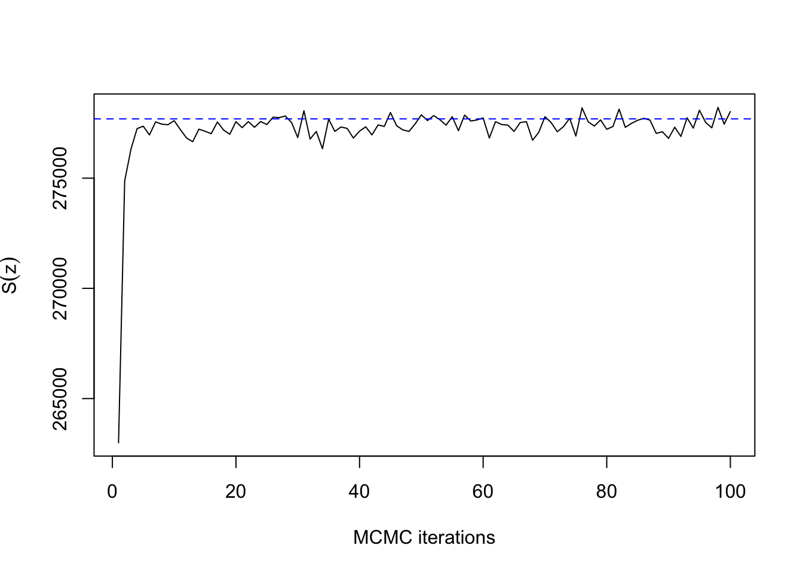
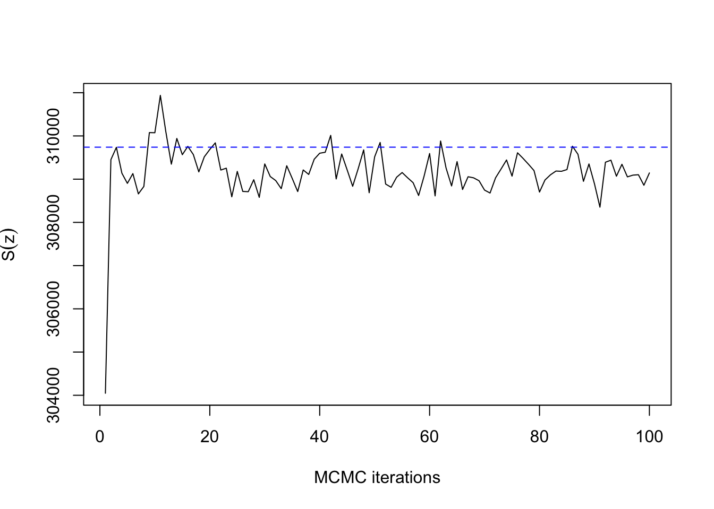
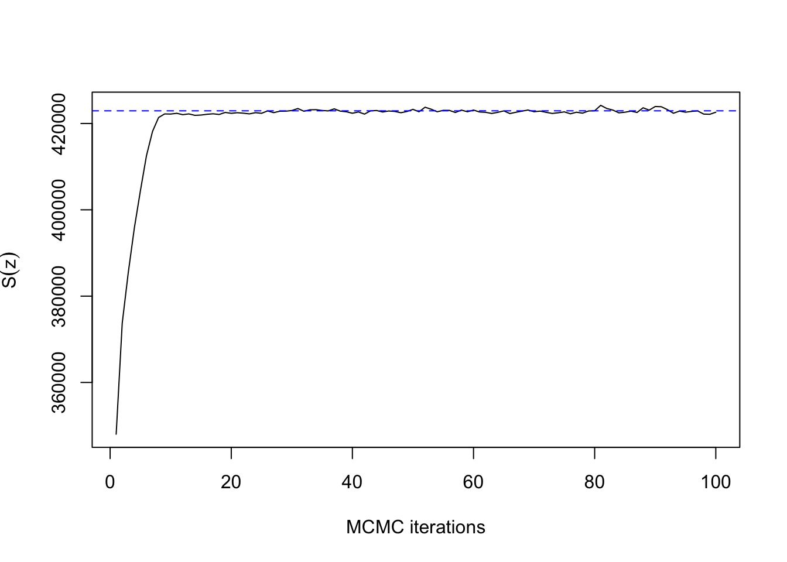

mcmcPotts
Matt Moores
19 November 2017
This post looks at the convergence of the chequerboard Gibbs sampler for the hidden Potts model, in the presence of an external field. This algorithm is implemented as the function mcmcPotts in my R package, bayesImageS. Previous posts have looked at the convergence of Gibbs and Swendsen-Wang algorithms without an external field, as implemented in mcmcPottsNoData and swNoData functions.
The most accurate way to measure convergence is using the coupling time of a perfect sampling algorithm, such as coupling from the past (CFTP). However, we can obtain a rough estimate by monitoring the distribution of the sufficient statistic: \[ \text{S}(\mathbf{z}) = \sum_{\{i,j\} \in \mathcal{E}} \delta(z_i, z_j) \] Where \(\delta(x,y)\) is the Kronecker delta function. Note that this sum is defined over the unique undirected edges of the lattice, to avoid double-counting. Under this definition, the critical temperature of the \(q\)-state Potts model is \(\log\{1 + \sqrt{q}\}\), or \(\approx 0.88\) for the Ising model with \(q=2\) unique labels. Some papers state that the critical temperature of the Ising model is \(0.44\), but this is because they have used a different definition of \(\text{S}(\mathbf{z})\).
We will generate synthetic data for a sequence of values of the inverse temperature, \(\beta = (0.22, 0.44, 0.88, 1.32)\):
library(bayesImageS)
library(doParallel)## Loading required package: foreach## Loading required package: iterators## Loading required package: parallelset.seed(123)
q <- 2
beta <- c(0.22, 0.44, 0.88, 1.32)
mask <- matrix(1,nrow=500,ncol=500)
n <- prod(dim(mask))
neigh <- getNeighbors(mask, c(2,2,0,0))
block <- getBlocks(mask, 2)
edges <- getEdges(mask, c(2,2,0,0))
maxS <- nrow(edges)
cl <- makeCluster(min(4, detectCores()))
registerDoParallel(cl)
system.time(synth <- foreach (i=1:length(beta),
.packages="bayesImageS") %dopar% {
gen <- list()
gen$beta <- beta[i]
# generate labels
sw <- swNoData(beta[i], q, neigh, block, 200)
gen$z <- sw$z
gen$sum <- sw$sum[200]
# now add noise
gen$mu <- rnorm(2, c(-1,1), 0.5)
gen$sd <- 1/sqrt(rgamma(2, 1.5, 2))
gen$y <- rnorm(n, gen$mu[(gen$z[1:n,1])+1],
gen$sd[(gen$z[1:n,1])+1])
gen
})## user system elapsed
## 0.285 0.045 12.477stopCluster(cl)Now let’s look at the distribution of Gibbs samples for the first dataset, using a fixed value of \(\beta\):
priors <- list()
priors$k <- q
priors$mu <- c(-1,1)
priors$mu.sd <- rep(0.5,q)
priors$sigma <- rep(2,q)
priors$sigma.nu <- rep(1.5,q)
priors$beta <- rep(synth[[1]]$beta, 2)
mh <- list(algorithm="ex", bandwidth=1, adaptive=NA,
auxiliary=1)
tm <- system.time(res <- mcmcPotts(synth[[1]]$y, neigh,
block, priors, mh, 100, 50))print(tm)## user system elapsed
## 33.009 1.030 8.778mean(res$sum[51:100])## [1] 277476.6print(synth[[1]]$sum)## [1] 277689ts.plot(res$sum, xlab="MCMC iterations", ylab=expression(S(z)))
abline(h=synth[[1]]$sum, col=4, lty=2)
As expected for \(\beta=0.22\) with \(n=400\) pixels, convergence takes only a dozen iterations or so. The same is true for \(\beta=0.66\):
priors$beta <- rep(synth[[2]]$beta, 2)
tm2 <- system.time(res2 <- mcmcPotts(synth[[2]]$y,
neigh, block, priors, mh, 100, 50))print(tm2)## user system elapsed
## 32.898 1.563 9.367ts.plot(res2$sum, xlab="MCMC iterations", ylab=expression(S(z)))
abline(h=synth[[2]]$sum, col=4, lty=2)
Now with \(\beta=0.88\):
priors$beta <- rep(synth[[3]]$beta, 2)
tm3 <- system.time(res3 <- mcmcPotts(synth[[3]]$y,
neigh, block, priors, mh, 100, 50))print(tm3)## user system elapsed
## 32.856 1.729 9.305ts.plot(res3$sum, xlab="MCMC iterations", ylab=expression(S(z)))
abline(h=synth[[3]]$sum, col=4, lty=2)
So far, so good. Now let’s try with \(\beta=1.32\):
priors$beta <- rep(synth[[4]]$beta, 2)
tm4 <- system.time(res4 <- mcmcPotts(synth[[4]]$y,
neigh, block, priors, mh, 300, 150))print(tm4)## user system elapsed
## 100.193 4.337 27.559ts.plot(res4$sum, xlab="MCMC iterations", ylab=expression(S(z)))
abline(h=synth[[4]]$sum, col=4, lty=2)
This doesn’t really count as slow mixing, since the Gibbs sampler has converged within 100 iterations for a lattice with \(500 \times 500\) pixels. Compare how long it takes without the external field:
system.time(res5 <- mcmcPottsNoData(synth[[4]]$beta, q,
neigh, block, 5000))## user system elapsed
## 263.072 6.611 72.588ts.plot(res5$sum, xlab="MCMC iterations", ylab=expression(S(z)))
abline(h=synth[[4]]$sum, col=4, lty=2)This explains why single-site Gibbs sampling should never be used for the auxiliary iterations in ABC or the exchange algorithm, but it is usually fine to use when updating the hidden labels. Note that all of these results have been for a fixed \(\beta\). It is more difficult to assess convergence when \(\beta\) is unknown. A topic for a future post!